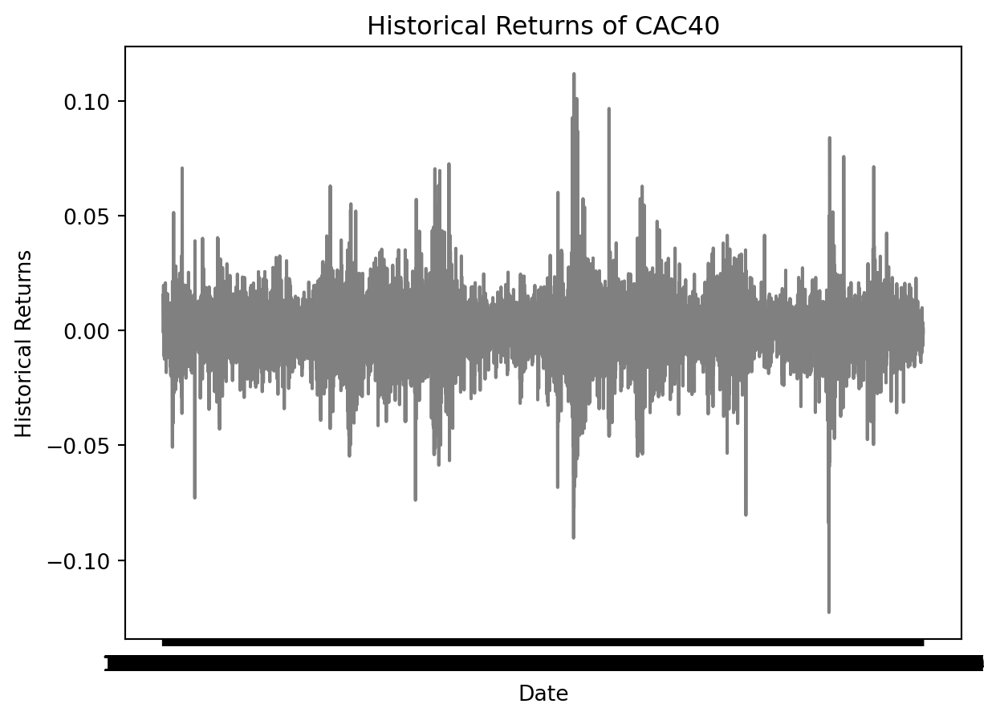
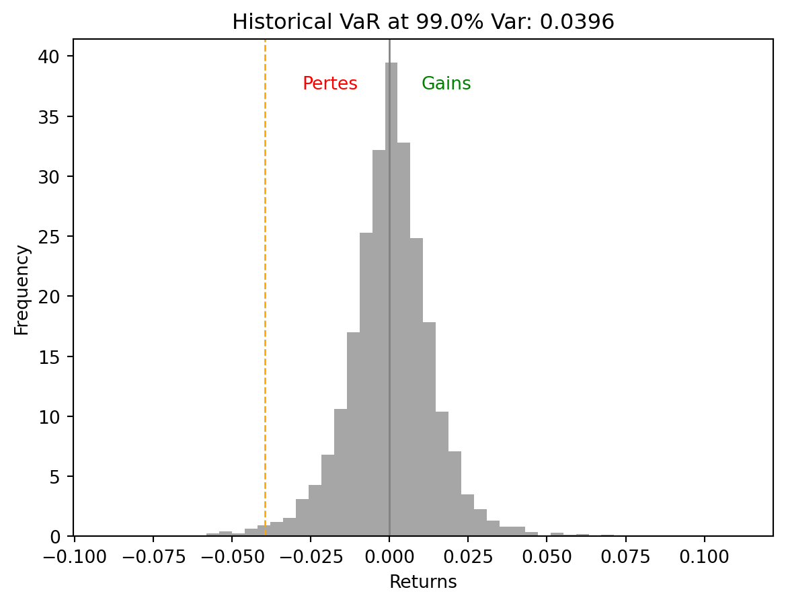

Nous allons ici nous intéresser aux applications de la Value at Risk (VaR) en finance. La VaR est une mesure de risque qui permet d’estimer les pertes maximales potentielles d’un portefeuille d’actifs financiers sur un horizon de temps donné, à un certain niveau de confiance. Elle est largement utilisée par les institutions financières pour évaluer et gérer les risques de marché, de crédit et de liquidité (cf. Value at-Risk)
Import des données
Nous utilisons les données du CAC 40 du 01/03/1990 au 10/05/2024. Le CAC 40 (Cotation Assistée en Continu) est l’indice boursier le plus important de la Bourse de Paris. Son nom signifie que c’est un indice composé des 40 sociétés françaises les plus significatives et les plus liquides cotées sur Euronext Paris, qui est l’une des principales places boursières en Europe.
# Librairie où importer les donnéesimport yfinance as yf_ = yf.Ticker("^FCHI")ts_data = _.history("max")ts_data.index = ts_data.index.strftime('%Y-%m-%d')ts_data.columns
La prix de la clôture, c’est à dire, le prix final de l’indice à la fin de la session de trading sur Euronext Paris, est la bourse où l’indice est coté. Celà reflète l’impact des nouvelles économiques, des performances des entreprises comprises dans l’indice, et des mouvements généraux du marché.
Nous l’utiliserons pour calculer le rendement (arithmétique) pour avoir le pourcentage de changement de prix pour l’indice CAC40 qui définit notre distribution de probabilité pour les gains ou les pertes quotidiens.
Le rendement entre \(t\) et \(t-1\) se calcule comme suit :
\[
R_{t} = \frac{P_{t}-P_{t-1}}{P_{t-1}}
\]
où \(P_{t}\) est le prix de clôture à la date \(t\).
import warningswarnings.filterwarnings('ignore')ts_data = ts_data[[ 'Close']]import pandas as pdimport numpy as npts_data['Return'] = ts_data["Close"].pct_change()ts_data = ts_data.dropna(subset=['Return'])print(ts_data.head())
Close Return
Date
1990-03-02 1860.0 0.015284
1990-03-05 1874.0 0.007527
1990-03-06 1872.0 -0.001067
1990-03-07 1880.0 0.004274
1990-03-08 1917.0 0.019681
Test de stationarité du log-rendement
Pour utiliser le rendement comme variable profit et perte (PnL : Profit and Loss) pour impléter la VaR, nous devons tester sa stationarité. En effet, la stationarité est une propriété importante des séries temporelles financières. Une série temporelle est dite stationnaire si ses propriétés statistiques telles que la moyenne, la variance et la covariance restent constantes au fil du temps.
import matplotlib.pyplot as pltplt.figure(figsize=(6, 4))fig, ax = plt.subplots(1)ax.set_xlabel('Date')ax.set_ylabel('Historical Returns')ax.plot(ts_data.index, ts_data['Return'], color='grey')ax.tick_params(axis='y')plt.title('Historical Returns of CAC40')plt.show()
<Figure size 576x384 with 0 Axes>

Il semblerait que la série des rendements est stationnaire. Nous allons tout de même en observant l’ACF et le PACF mais aussi effectuer un test de stationarité pour confirmer cette hypothèse.
L’autocorrélation(ACF) et l’autocorrélation partielle(PACF) décroissent de manière exponentielle, ce qui indique que la série est stationnaire.
Pour plus de certitude, nous allons effectuer un test de Dickey-Fuller augmenté (ADF) pour tester la stationnaire dans la série :
\[
H_0=\rho = 1, \alpha=0
\]
Dans le cas d’une série AR(1)(\(X_t = \alpha + \rho X_{t-1} + \xi_t\)) avec intercept, la série est non stationnaire si \(\rho = 1\) et stationnaire si $< 1. Dans le cas contraire, il faudrait considérer la série de différences pour la rendre stationnaire.
from statsmodels.tsa.stattools import adfulleradf_result = adfuller(ts_data['Return'].dropna(), regression='c')print(f"ADF Statistic: {round(adf_result[0],2)} and p-value: {adf_result[1]}")
ADF Statistic: -41.06 and p-value: 0.0
La p-value du test de dickey fuller est environ égale à 0, ce qui signifie que nous rejetons l’hypothèse nulle selon laquelle la série n’est pas stationnaire. Ainsi la série des log-rendements est stationnaire. Nous pouvons donc utiliser les rendements logarithmiques pour calculer la VaR à horizon 1 jour.
Modélisation de la VaR
Pour modéliser la VaR, nous considérons un échantillon d’apprentissage avec 75% (6513) des données et 25% (2172) pour l’échantillon de test.
train_size =int(len(ts_data)*0.75)test_size =len(ts_data)-train_sizetrain_close = ts_data.iloc[0:train_size,:].dropna()test_close = ts_data.iloc[train_size:len(ts_data),:]print("Taille de l'ensemble d'apprentissage :", len(train_close))print("Taille de l'ensemble de test :", len(test_close))
Taille de l'ensemble d'apprentissage : 6513
Taille de l'ensemble de test : 2172
VaR analytique
Pour rappel, la VaR analytique ou gaussienne est basée sur la distribution gaussienne des rendements. Nous allons utiliser la distribution normale pour calculer la VaR à horizon 1 jour. La VaR à horizon 1 jour est définie comme suit :
\[
VaR = -\mu_{PnL} + \Phi^{-1}(\alpha) \times \sigma_{PnL}
\] où \(\Phi^{-1}(\alpha)\) est le quantile de la distribution normale du PnL (Profit and Loss) à \(\alpha\).
Pour ce faire, nous allons tester que les rendements suivent une loi normale. Nous utiliserons le test de Shapiro (shapiro dans la librairie scipy.stats) dont l’hypothèse nulle est que la population étudiée suit une distribution normale.
from scipy import statsstats.shapiro(train_close["Return"]).pvalue
7.808175173064313e-41
Nous obtenons une pvaleur quasiment nulle donc nous rejettons l’hypothèse de la distribution normale de nos rendements. Celà est plus visible avec le QQ-plot ci dessous qui montre clairement que les queues de distribution du rendement ne suit pas une loi normale.
from scipy import statsdef gaussian_var(PnL, seuil): mean_PnL = np.mean(PnL) sd_PnL = np.std(PnL) VaR =- mean_PnL + sd_PnL * stats.norm.ppf(seuil)return VaRseuil =0.99VaR_gaussienne = gaussian_var(train_close["Return"], seuil)print(f"La VaR à horizon 1 jour est de {round(VaR_gaussienne, 4)}")
La VaR à horizon 1 jour est de 0.0324
La VaR à horizon 1 jour est de 0.0324, ce qui signifie que la perte maximale en terme de rendements du portefeuille est de 3.24% en un jour.
Sur 10 jours, la VaR est de \(VaR_{1j} \times \sqrt{10}=\) 10.24%. Pour le visualiser sur la distribution des rendements, nous avons le graphique ci-dessous :
# Plot histogram of returnsplt.hist(train_close["Return"], bins=50, density=True, alpha=0.7,color="grey")# Plot VaR lineplt.axvline(x=-VaR_gaussienne, color="orange", linestyle="--", linewidth=1)plt.axvline(x=0, color="grey", linewidth=0.5)# Add text for Loss and Gainplt.text(-0.01, plt.ylim()[1] *0.9, 'Pertes', horizontalalignment='right', color='red')plt.text(0.01, plt.ylim()[1] *0.9, 'Gains', horizontalalignment='left', color='green')# Add labels and titleplt.xlabel("Returns")plt.ylabel("Frequency")plt.title(f"Gaussian VaR at {seuil *100}%, Var: {VaR_gaussienne:.4f}")# Show the plotplt.show()
Backtesting
Pour backtester la VaR, nous allons comparer dans l’échantillon test les rendements avec la VaR à horizon 1 jour. Si le rendement est inférieur à l’opposé de la VaR gaussienne, alors la VaR est violée et celà correspond à une exception.
Ci dessous, le graphique qui permet de visualiser le nombre d’exceptions que nous comptabilisons sur nos données test.
plt.plot(ts_data.index[0:train_size], train_close['Return'], label="historical train returns", color ='gray')plt.plot(ts_data.index[train_size:], test_close['Return'], label="historical test returns", color ='blue')plt.plot(ts_data.index[train_size:], [-VaR_gaussienne for i inrange(test_size)], label="gaussian VaR", color ='red')list_exceptions_gaus = [i for i inrange(len(test_close['Return'])) if test_close['Return'][i]<-VaR_gaussienne]plt.scatter(test_close.index[list_exceptions_gaus], test_close['Return'][list_exceptions_gaus], color='red', label='Exceptions')plt.title('CAC40')plt.ylabel('Values')plt.plot()plt.legend()plt.show()
Nous pouvons compter le nombre d’exceptions pour la VaR à horizon 1 jour qui est égale à 30 et en déduisons que le taux d’exception est 1.38%.
Pour tester la pertinence de la VaR calculée, il faudrait idéalement que le taux d’exception soit inférieur à 1%. Pour ce faire, nous pouvons effectuer un test de proportion. Nous utiliserons la fonction stats.binomtest pour effectuer ce test.
La pvaleur de ce test est 3.70%, celà est inférieur à 5% donc nous rejetons l’hypothèse nulle selon laquelle le taux d’exception est égale à 0.01 au risque 5% de se tromper. Celà nous indique que la VaR gaussienne n’est pas performante. Ceci n’est pas surprenant étant donné que nous faisons une hypothèse sur la distribution des rendements qui n’est pas vérifiée.
VaR historique
La VaR historique est basée sur les rendements historiques. Elle est définie comme l’opposé du quantile de niveau \(1-\alpha\) des rendements historiques.
Considérons les mouvements de prix quotidiens pour l’indice CAC40 au cours des 6513 jours de trading. Nous avons donc 6513 scénarios ou cas qui serviront de guide pour les performances futures de l’indice, c’est-à-dire que les 6513 derniers jours seront représentatifs de ce qui se passera demain.
Ainsi donc la VaR historique pour un horizon de 1jour à 99% correspond au 1er percentile de la distribution de probabilité des rendements quotidiens (le top 1% des pires rendements).
def historical_var(PnL, seuil):return-np.percentile(PnL, (1- seuil) *100)VaR_historique = historical_var(train_close["Return"],seuil)print(f"La VaR historique à horizon 1 jour est de {round(VaR_historique, 4)}")
La VaR historique à horizon 1 jour est de 0.0396
Nous en déduisons que la perte maximale en terme de rendements du portefeuille est de 3.96% en un jour (soit 12.52% en 10jours)
# Plot histogram of returnsplt.hist(train_close["Return"], bins=50, density=True, alpha=0.7,color="grey")# Plot VaR lineplt.axvline(x=-VaR_historique, color="orange", linestyle="--", linewidth=1)plt.axvline(x=0, color="grey", linewidth=1)# Add text for Loss and Gainplt.text(-0.01, plt.ylim()[1] *0.9, 'Pertes', horizontalalignment='right', color='red')plt.text(0.01, plt.ylim()[1] *0.9, 'Gains', horizontalalignment='left', color='green')# Add labels and titleplt.xlabel("Returns")plt.ylabel("Frequency")plt.title(f"Historical VaR at {seuil *100}% Var: {VaR_historique:.4f}")# Show the plotplt.show()

Backtesting
En ce qui concerne le backtesting, nous pouvons voir que la VaR historique est beaucoup moins violée dans l’échantillon test que la VaR gaussienne. Le taux d’exception est de 0.64%.
import matplotlib.pyplot as pltplt.plot(ts_data.index[0:train_size], train_close['Return'], label="historical train returns", color ='gray')plt.plot(ts_data.index[train_size:], test_close['Return'], label="historical test returns", color ='blue')plt.plot(ts_data.index[train_size:], [-VaR_historique for i inrange(test_size)], label="historical VaR", color ='red')list_exceptions_hist = [i for i inrange(len(test_close['Return'])) if test_close['Return'][i]<-VaR_historique]plt.scatter(test_close.index[list_exceptions_hist], test_close['Return'][list_exceptions_hist], color='red', label='Exceptions')plt.title('CAC40')plt.ylabel('Values')plt.plot()plt.legend()plt.show()
Nous pouvons compter le nombre d’exceptions pour la VaR à horizon 1 jour qui est égale à 14 et en déduisons que le taux d’exception est 0.64%. Ce taux d’exception est statistiquement supérieur à 1% (car la pvaleur est d’environ 0.95). Ainsi, la VaR historique est performante pour la période considérée.
La VaR Monte Carlo est basée sur la simulation de trajectoires de rendements. Nous allons simuler 1000 trajectoires de rendements et calculer la VaR à horizon 1 jour en posant une hypothèse de normalité sur la distribution des rendements.
num_simulations =1000mean=train_close["Return"].mean()std = train_close["Return"].std()# Generate random scenarios of future returnssimulated_returns = np.random.normal(mean, std, size= num_simulations)# Calculate portfolio values for each scenarioportfolio_values = (train_close["Close"].iloc[-1] * (1+ simulated_returns))# Convert portfolio_values into a DataFrameportfolio_values = pd.DataFrame(portfolio_values)# Calculate portfolio returns for each scenarioportfolio_returns = portfolio_values.pct_change()portfolio_returns=portfolio_returns.dropna()portfolio_returns=portfolio_returns.mean(axis=1)# Calculate VaRif portfolio_returns.iloc[-1] !=0: VaR_monte_carlo = historical_var(portfolio_returns,seuil)else: VaR_monte_carlo =0print(f"La VaR monte carlo à horizon 1 jour est de {round(VaR_monte_carlo, 4)}")
La VaR monte carlo à horizon 1 jour est de 0.0424
Nous en déduisons que la perte maximale en terme de rendements du portefeuille est de 4.42% en un jour (soit 13.98% en 10jours)
# Plot histogram of returnsplt.hist(portfolio_returns, bins=50, density=True, alpha=0.7,color="grey")# Plot VaR lineplt.axvline(x=-VaR_monte_carlo, color="orange", linestyle="--", linewidth=1)plt.axvline(x=0, color="grey", linewidth=1)# Add text for Loss and Gainplt.text(-0.01, plt.ylim()[1] *0.9, 'Pertes', horizontalalignment='right', color='red')plt.text(0.01, plt.ylim()[1] *0.9, 'Gains', horizontalalignment='left', color='green')# Add labels and titleplt.xlabel("Returns")plt.ylabel("Frequency")plt.title(f"Simulated Returns, Monte carlo VaR at {seuil *100}% Var: {VaR_monte_carlo:.4f}")# Show the plotplt.show()
Backtesting
En ce qui concerne le backtesting, nous pouvons voir que la VaR historique est beaucoup moins violée dans l’échantillon test que les deux autres VaRs. En effet, le taux d’exception est de 0.37%.
plt.plot(ts_data.index[0:train_size], train_close['Return'], label="historical train log returns", color ='gray')plt.plot(ts_data.index[train_size:], test_close['Return'], label="historical test log returns", color ='blue')plt.plot(ts_data.index[train_size:], [-VaR_monte_carlo for i inrange(test_size)], label="Non parametric Bootstrap VaR", color ='red')list_exceptions_np_boot = [i for i inrange(len(test_close['Return'])) if test_close['Return'][i]<-VaR_monte_carlo]plt.scatter(test_close.index[list_exceptions_np_boot], test_close['Return'][list_exceptions_np_boot], color='red', label='Exceptions')plt.title('CAC40')plt.ylabel('Values')plt.plot()plt.legend()plt.show()
Ce taux est statistiquement inférieur à 1% ce qui temoigne de la performance de la VaR monte carlo.
Comme on peut le constater, les différentes méthodes d’implémentations de VaR donnent des résultats différents. Toutefois, la VaR la plus performante est la VaR monte carlo en faisant l’hypothèse de distribution normale des rendements.
# Print the VaR valuesprint(f"Parametric VaR: {VaR_gaussienne:.2%}, Pvalue du backtesting: {ptest(0.01, test_size, len(list_exceptions_gaus)):.4f}")print(f"Historical VaR: {VaR_historique:.2%}, Pvalue du backtesting: {ptest(0.01, test_size, len(list_exceptions_hist)):.4f}")print(f"Monte Carlo VaR: {VaR_monte_carlo:.2%}, Pvalue du backtesting: {ptest(0.01, test_size, len(list_exceptions_np_boot)):.4f}")
Parametric VaR: 3.24%, Pvalue du backtesting: 0.0371
Historical VaR: 3.96%, Pvalue du backtesting: 0.9520
Monte Carlo VaR: 4.24%, Pvalue du backtesting: 0.9970